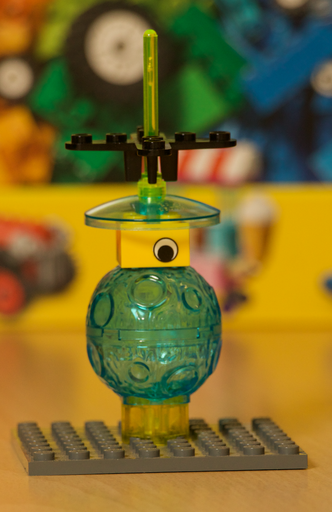
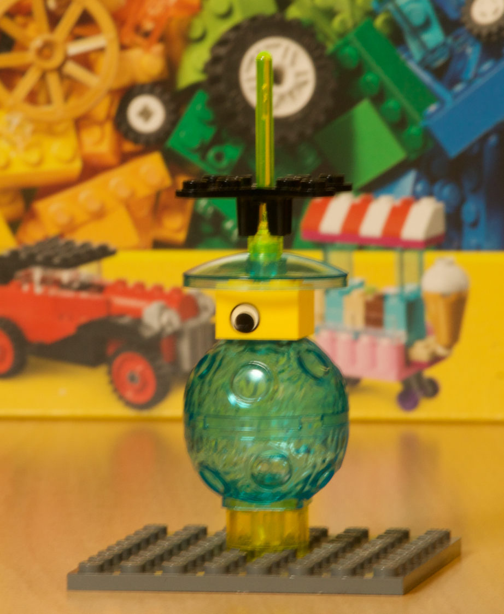
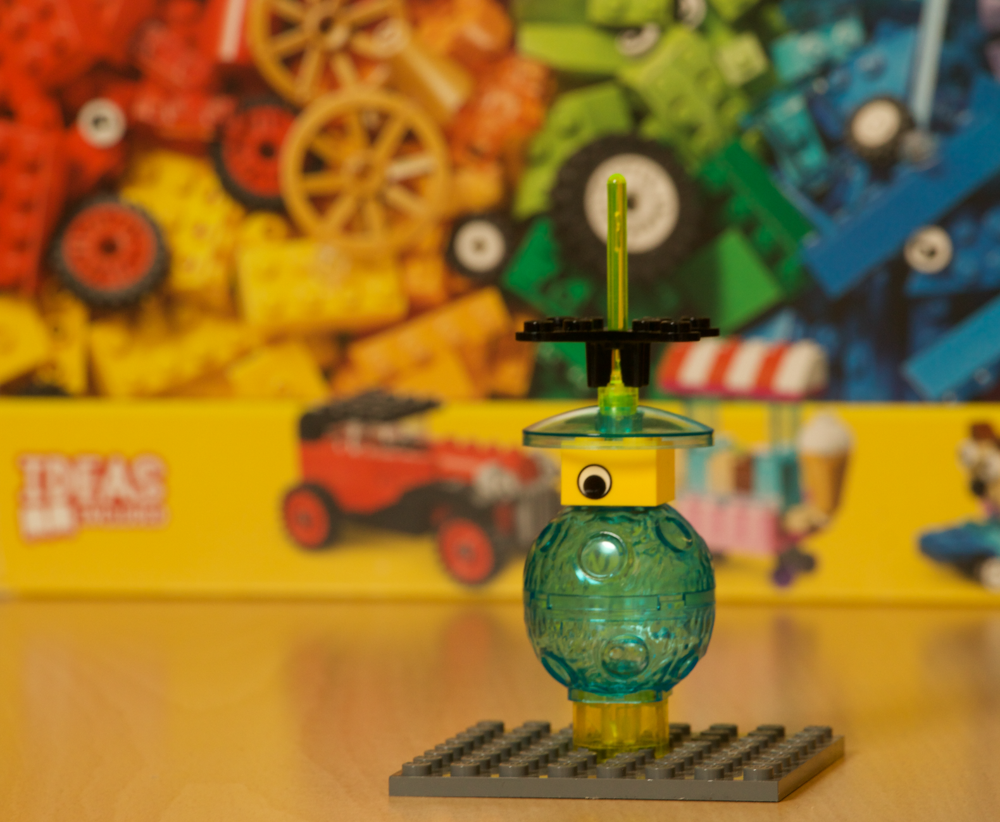
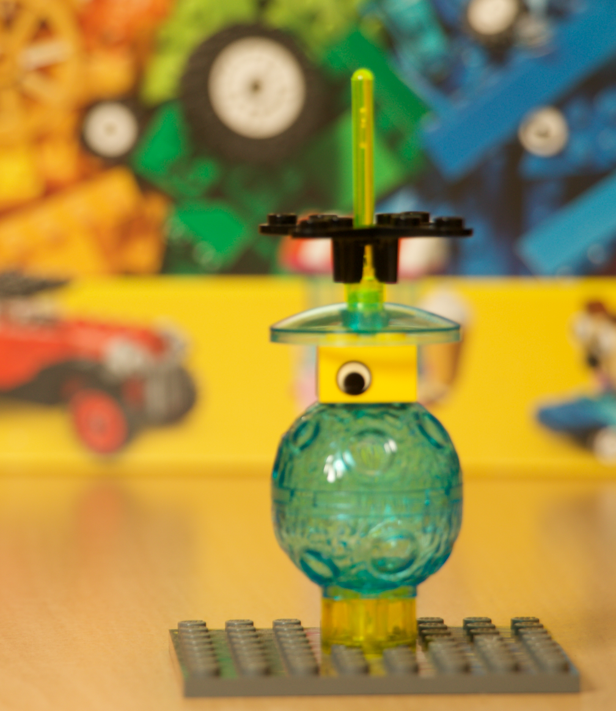
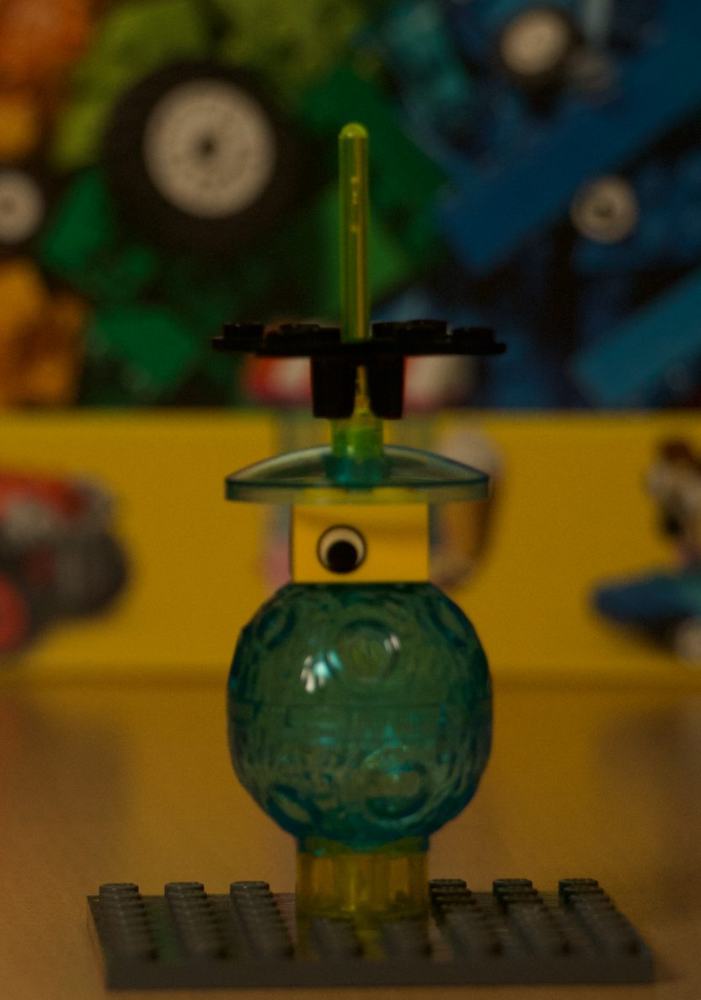
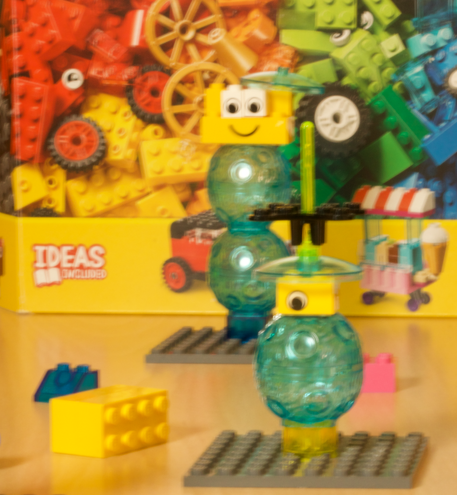
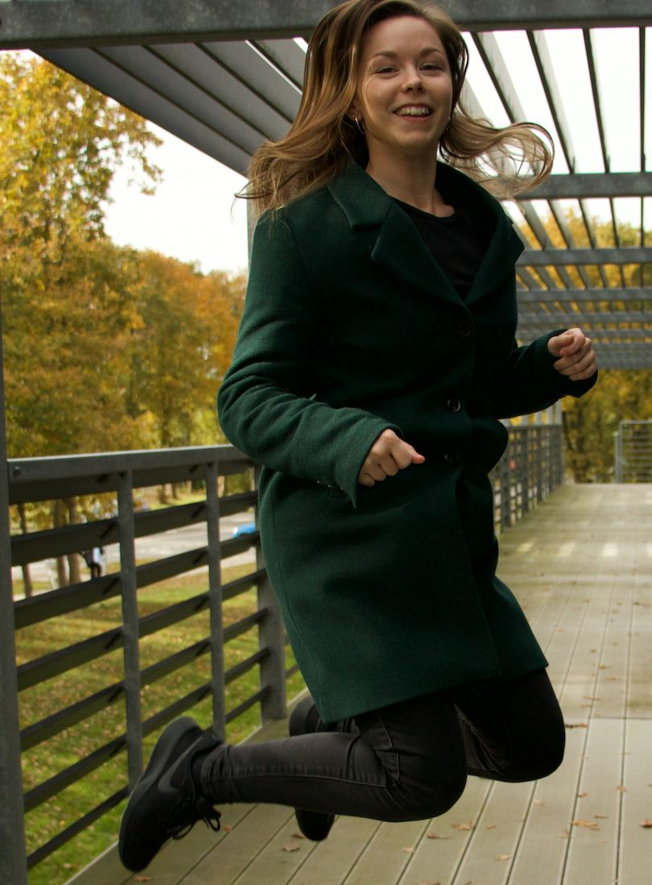
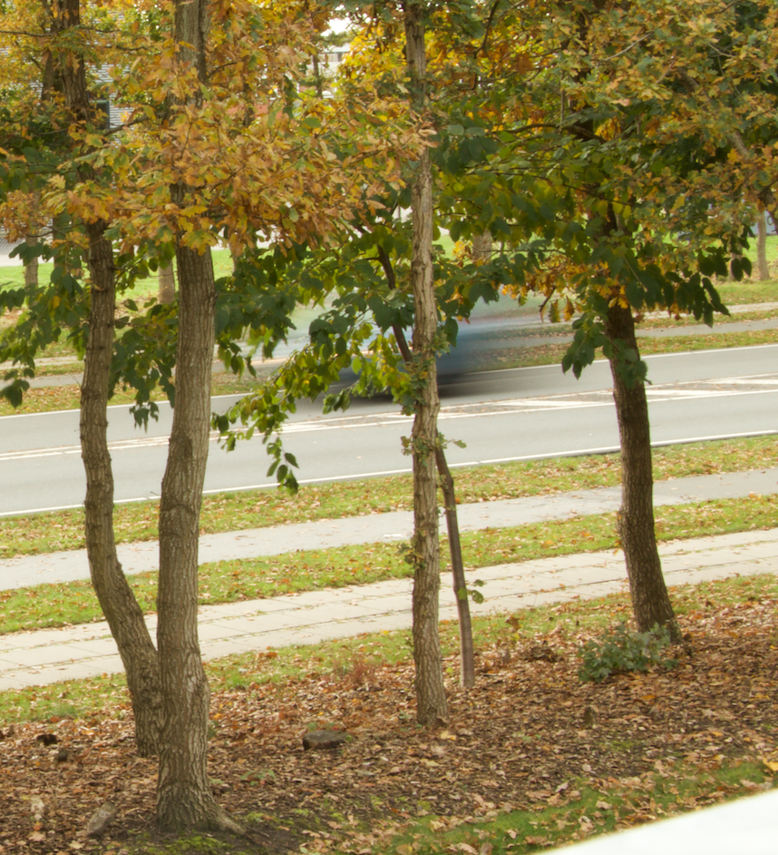
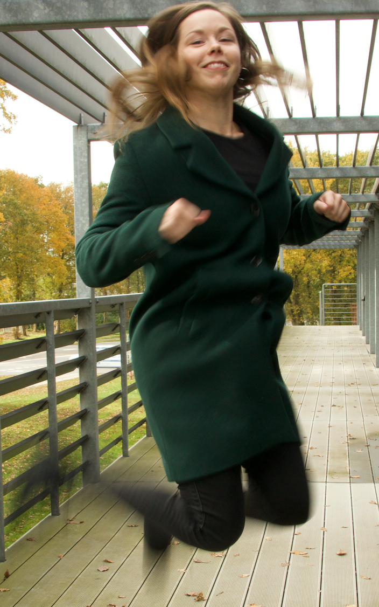
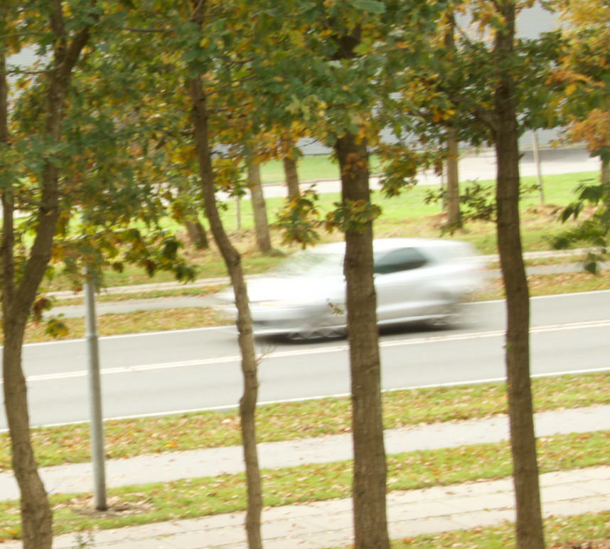

Dette handler om eksponering, det går ud på at man bruger de eksponeringsparametre, såsom lukketid, blænde og ISO.
Det går ud på at man tager nogle billeder af et objekt på forskellige måder, og her er det så at man tager billeder af en figur lavet af lego.




Her kan man se at der er blevet ændret noget lys, så det ser mere naturlig ud. Disse funktioner på et kamera har meget at sige om hvordan man gerne vil have billedet skal se ud.

Dette billede er mørkere end de andre da man har valgt at skrue med på lyset på kameraret, det er også med at lave en at den ikke har særligt meget dybdeskarphed.

Her på dette billede kan man se at der er blevet leget med objekterne, da den ene er mere fremtræden end den anden, denne effekt, er noget man indstiller på kameraret, hvordan blænder skal være indstilleret.
Denne billede kan se hvad der er i fokus, da man har valgt at på den ene objekt til at se at den ikke er nær så vigtigt. At man taget mindre ud af fokus, men ikke særligt meget.
Lukkertid er hvordan man kan påvirke et billede, kaldet Tv på et kamera. Shutter priority, er det program hvor man har kontrol over hvordan lukkertiden skal være, men at den inbyggede eksponeringsprogram er den der styrer blænden.


Både billede 7 og 8 ligner meget hinanden eftersom de er der blevet brugt stor brændvidde.

Dette er om at man kan bruge et kamera hvor obejekterne beværger sig hurtiger.
